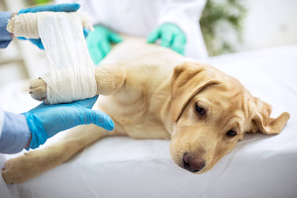
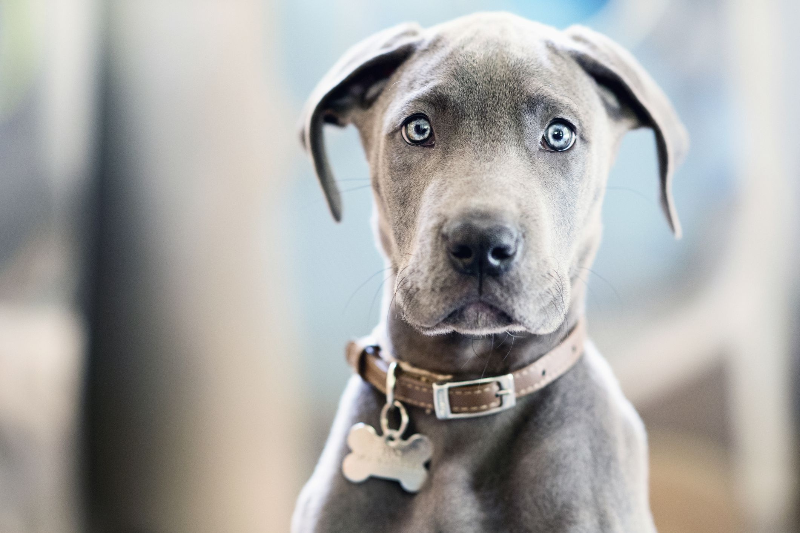

🚨 Incident Reporting
Report strays in distress instantly using our GPS-enabled reporting tool.

📦 Donation Center
Directly provide food and medical supplies to our partner shelters.

🏠 Adopt A Pet
Connect with lovable pets and give them the forever home they deserve.